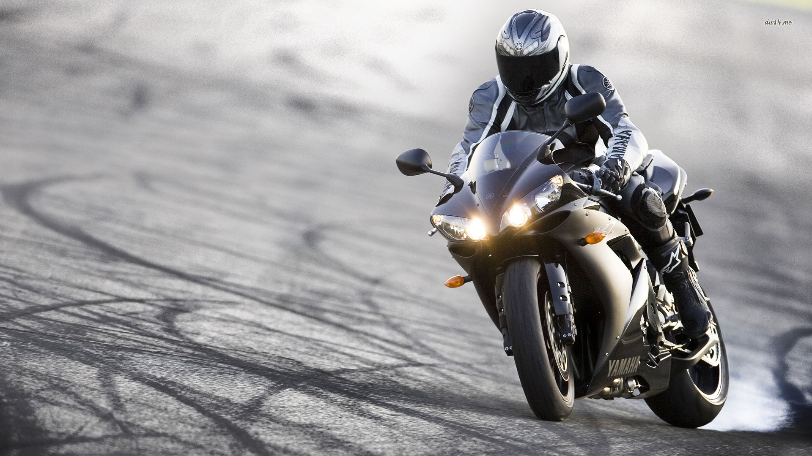

YZF-R1
El Placer De Manejar Una R1
05/15/2023 - Manejar una Yamaha R1 es una experiencia emocionante y gratificante para cualquier amante de las motocicletas deportivas. Desde el momento en que enciendes su motor de cuatro cilindros, sientes una combinación de poder y precisión bajo tus manos. La respuesta inmediata del acelerador y la suave transición de las marchas te permiten disfrutar de una aceleración impresionante y un manejo ágil.

Su diseño aerodinámico y ergonómico te brinda una conexión íntima con la carretera, haciendo cada curva una oportunidad para experimentar la perfección del chasis y la suspensión. Los frenos, potentes y confiables, te dan la confianza necesaria para explorar los límites de su rendimiento. Además, la tecnología avanzada de la R1, como los modos de conducción ajustables y los sistemas de asistencia electrónica, aseguran una experiencia de manejo personalizada y segura. En resumen, manejar una Yamaha R1 es una combinación sublime de velocidad, control y pura adrenalina.
Los modos de conducción ajustables y los sistemas de asistencia electrónica se convierten en aliados fundamentales, adaptando la respuesta de la moto a las preferencias y habilidades del piloto, y garantizando una experiencia de manejo que se adapta a cada estilo y necesidad. En cada aceleración, en cada frenada, en cada giro, la Yamaha R1 ofrece una dosis intensa de emoción y adrenalina, convirtiendo cada viaje en una experiencia inolvidable para aquellos afortunados que tienen el privilegio de montarla.
Beneficios De Manejar Una Yamaha
01/04/2023 Montar una motocicleta Yamaha va más allá de simplemente conducir; es una experiencia que abarca una serie de beneficios significativos en diversos aspectos de la vida del conductor. En primer lugar, la elección de una motocicleta Yamaha ofrece una conexión con una marca de renombre mundial, arraigada en una rica historia de excelencia en ingeniería y fabricación. Esto significa confiabilidad y calidad respaldadas por décadas de experiencia en el desarrollo de motocicletas.

Además, Yamaha ofrece una amplia variedad de modelos que se adaptan a diferentes estilos de conducción y necesidades individuales. Desde motocicletas deportivas hasta scooters urbanos, cada opción está diseñada para brindar una experiencia única en la carretera, permitiendo a los conductores encontrar la moto perfecta que se ajuste a sus preferencias y personalidad. La tecnología innovadora es otro aspecto destacado de las motocicletas Yamaha. Equipadas con características avanzadas que mejoran tanto la seguridad como el rendimiento, estas motos incorporan sistemas de última generación que incluyen frenos ABS, control de tracción y modos de conducción ajustables, lo que proporciona una experiencia de conducción más segura placentera.
La agilidad y la maniobrabilidad son características distintivas de las motocicletas Yamaha, lo que las hace ideales para navegar por el tráfico urbano o para disfrutar de emocionantes paseos por carreteras sinuosas. Su diseño ergonómico y su manejo preciso ofrecen una experiencia de conducción excepcionalmente satisfactoria. Por último, montar una motocicleta Yamaha te conecta con una comunidad apasionada de entusiastas del motociclismo. Ya sea a través de eventos, clubes de propietarios o foros en línea, compartir experiencias y aventuras con otros amantes de las dos ruedas enriquece la experiencia de montar una Yamaha, convirtiéndola en algo más que un simple medio de transporte, sino en un estilo de vida apasionante y gratificante.